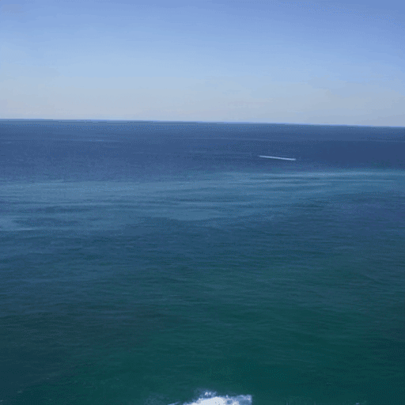
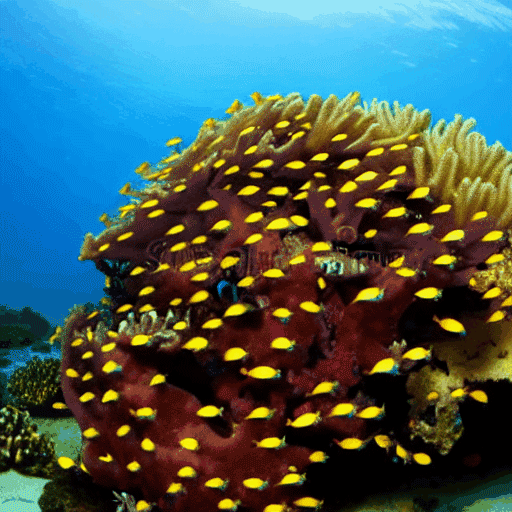
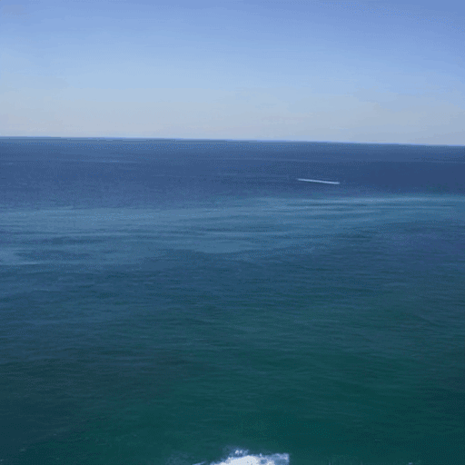
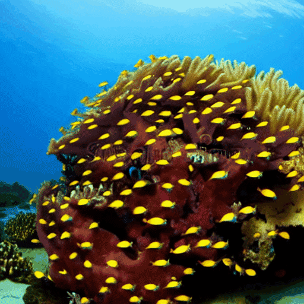
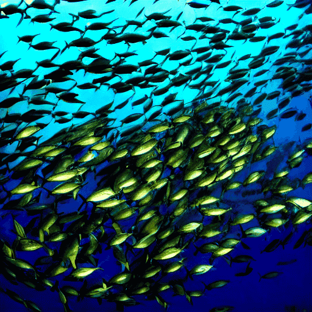
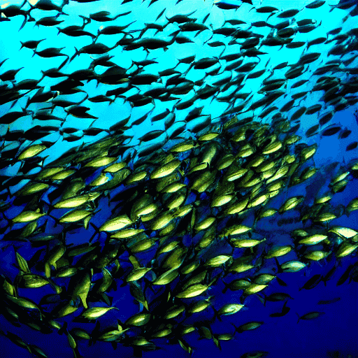

Abstract
Reconstructing human dynamic vision from brain activity is a challenging task with great scientific significance. Although prior video reconstruction methods have made substantial progress, they still suffer from several limitations, including: (1) difficulty in simultaneously reconciling semantic (e.g. categorical descriptions), structure (e.g. size and color), and consistent motion information (e.g. order of frames); (2) low temporal resolution of fMRI, which poses a challenge in decoding multiple frames of video dynamics from a single fMRI frame; (3) reliance on video generation models, which introduces ambiguity regarding whether the dynamics observed in the reconstructed videos are genuinely derived from fMRI data or are artifacts introduced by the model's exposure to external video data during training. To overcome these limitations, we propose a two-stage model named Mind-Animator. During the fMRI-to-feature stage, we decouple semantic, structure, and motion features from fMRI. Specifically, we employ fMRI-vision-language tri-modal contrastive learning to decode semantic feature from fMRI and design a sparse causal attention mechanism for decoding multi-frame video motion features through a next-frame-prediction task. In the feature-to-video stage, these features are integrated into videos using an inflated Stable Diffusion, effectively eliminating external video data interference. Extensive experiments on multiple video-fMRI datasets demonstrate that our model achieves state-of-the-art performance. Comprehensive experimental analyses further elucidate the interpretability of our model from a neurobiological perspective.
Motivations

When subjects view static images, the primary visual cortex first processes low-level structural information, such as location, shape, size, and color. Subsequently, in the higher visual cortex, the interpretation of category and description leads to high-level semantic understanding. Based on these findings in neuroscience, previous studies have attempted to reconstruct images by disentangling semantic and structural information. Naturally, when reconstructing dynamic video stimuli, in addition to these two features, it is also crucial to consider how motion information can be decoded from brain responses.
Related works

As depicted in Figure (a), early works by Han, Wen, Wang, and others mapped brain responses to the feature spaces of deep neural networks (DNNs) for end-to-end video reconstruction. To address the scarcity of paired video-fMRI data, Kupershmidt further advanced this approach by leveraging self-supervised learning to incorporate a large volume of unpaired video data. Although these studies demonstrated the feasibility of reconstructing videos from fMRI signals, the results notably lacked explicit semantic content.
As shown in Figure (b), with advancements in multimodal and generative models, Chen, Sun, et al. used contrastive learning to map fMRI signals to the CLIP latent space for semantic decoding, followed by input into a video generation model for reconstruction. This approach produces semantically coherent and smooth videos, but it remains whether the motion information in the reconstructions originates from the fMRI or from the external video data used to train the video generation model.
To address the above issue, we propose Mind-Animator. By independently decoding semantic, structural, and motion information from fMRI signals and inputting them into an inflated image generation model, we ensure that the motion in the reconstructed videos originates solely from the fMRI data.

Notably, our method, which decodes semantic, structural, and motion information separately, produces reconstructions more closely aligned with the original video's appearance and motion trajectory (e.g., a forward-extending road). However, as shown in the red box, the use of an image generation model alone introduces 'jumpiness' between frames, resulting in lower inter-frame similarity and reduced smoothness compared to video generation models.
Therefore, video generation models were only used in the video demonstrations on the project homepage to enhance smoothness. In all other contexts (e.g., quantitative analysis, ablation studies, interpretability analysis), unless otherwise specified, only image generation models were employed.

Given ~3-5 images of a subject we fine tune a text-to-image diffusion in two steps: (a) fine tuning the low-resolution text-to-image model with the input images paired with a text prompt containing a unique identifier and the name of the class the subject belongs to (e.g., "A photo of a [T] dog”), in parallel, we apply a class-specific prior preservation loss, which leverages the semantic prior that the model has on the class and encourages it to generate diverse instances belong to the subject's class by injecting the class name in the text prompt (e.g., "A photo of a dog”). (b) fine-tuning the super resolution components with pairs of low-resolution and high-resolution images taken from our input images set, which enables us to maintain high-fidelity to small details of the subject.

Results
Results for re-contextualization of a bag and vase subject instances. By finetuning a model using our method we are able to generate different images of the a subject instance in different environments, with high preservation of subject details and realistic interaction between the scene and the subject. We display the conditioning prompts below each image.

Art Rendition
Original artistic renditions of our subject dog in the style of famous painters. We remark that many of the generated poses were not seen in the training set, such as the Van Gogh and Warhol rendition. We also note that some renditions seem to have novel composition and faithfully imitate the style of the painter - even suggesting some sort of creativity (extrapolation given previous knowledge).

Text-Guided View Synthesis
Our technique can synthesized images with specified viewpoints for a subject cat (left to right: top, bottom, side and back views). Note that the generated poses are different from the input poses, and the background changes in a realistic manner given a pose change. We also highlight the preservation of complex fur patterns on the subject cat's forehead.

Property Modification
We show color modifications in the first row (using prompts ``a [color] [V] car''), and crosses between a specific dog and different animals in the second row (using prompts ``a cross of a [V] dog and a [target species]''). We highlight the fact that our method preserves unique visual features that give the subject its identity or essence, while performing the required property modification.

Accessorization
Outfitting a dog with accessories. The identity of the subject is preserved and many different outfits or accessories can be applied to the dog given a prompt of type "a [V] dog wearing a police/chef/witch outfit''. We observe a realistic interaction between the subject dog and the outfits or accessories, as well as a large variety of possible options.

Societal Impact
This project aims to provide users with an effective tool for synthesizing personal subjects (animals, objects) in different contexts. While general text-to-image models might be biased towards specific attributes when synthesizing images from text, our approach enables the user to get a better reconstruction of their desirable subjects. On contrary, malicious parties might try to use such images to mislead viewers. This is a common issue, existing in other generative models approaches or content manipulation techniques. Future research in generative modeling, and specifically of personalized generative priors, must continue investigating and revalidating these concerns.
Acknowledgements:
We thank Rinon Gal, Adi Zicher, Ron Mokady, Bill Freeman, Dilip Krishnan, Huiwen Chang and Daniel Cohen-Or for their valuable inputs that helped improve this work, and to Mohammad Norouzi, Chitwan Saharia and William Chan for providing us with their support and the pretrained models of Imagen. Finally, a special thank you to David Salesin for his feedback, advice and for his support for the project.


 




 
